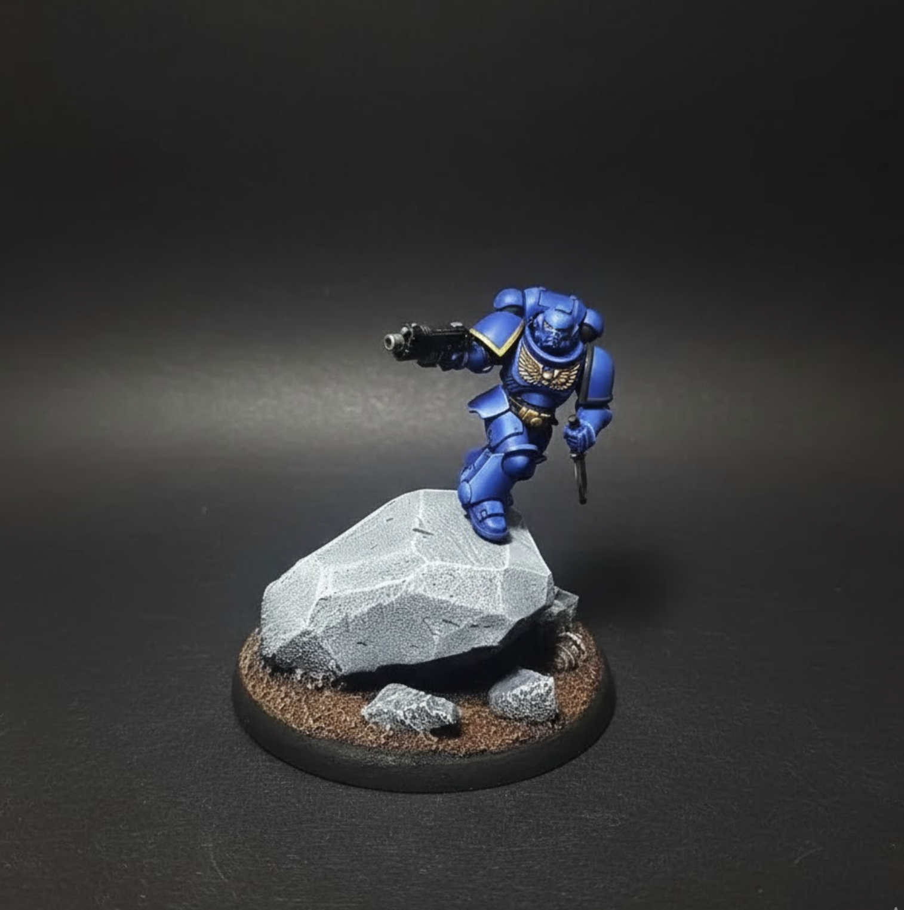
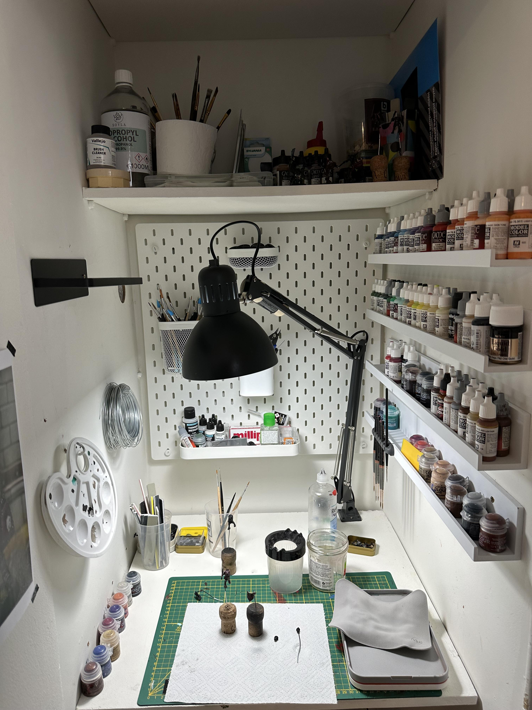

When I started BrushForge, I honestly just wanted to build a small tool for myself.
I’m a UX/UI designer by day, with a programming background, and I missed actually building things. Not just designing apps for others, but shipping something of my own again.
BrushForge became my excuse to properly get back into coding.
I didn’t expect it to grow into a long-running project across two platforms, with people using it
and way more work than I ever planned 😅
But here we are.
A bit of personal context
I also picked up miniature painting again after almost 20 years.
A while back I was dealing with pretty bad insomnia, and painting minis during those sleepless nights helped me more than I expected. Quiet hobby, no pressure, just focusing on tiny details while the rest of the world was asleep.
That’s also where the name MidnightMiniatures comes from.

BrushForge grew out of that same period. I kept running into small annoyances while painting and thought:
“Why isn’t there one place that just has all of this?”
So I started building it.
Starting with iOS (and learning the hard way)
BrushForge began on iOS.
It was my first proper mobile project in a while, and I relearned a lot the hard way: architecture mistakes, performance issues, weird edge cases, and of course users doing things you never expect.
After some time, I decided to also build an Android version.
Building Android second let me apply what I had learned from iOS and make better decisions the second time around.
Today both apps cover the core BrushForge workflows, but optional tools and import paths can still differ by platform and version. I keep working to bring the experiences closer without pretending they are identical. Your data syncs automatically between devices on the same platform, and manual backup and restore are also available. Android and iOS do not have complete cross-platform sync, and a manual transfer between them may be incomplete. Purchases remain tied to their platform.
How I learned while building it
BrushForge is built feature by feature as an independent project. I shaped and developed the product myself, learning through architecture mistakes, performance problems, documentation, testing, and feedback from the people using it.
Developer friends helped when I got stuck, and I sometimes used AI-assisted tools to explore an unfamiliar backend problem or another possible approach. They were learning aids, not a substitute for deciding, building, and testing the product.
The hardest parts weren’t coding
Building the app itself wasn’t the hardest part. Two things were much tougher.
1. The paint database
I could not find an open paint database or clean API that covered what I needed.
So much of the work is manual: collecting paints, cleaning data, checking colors, fixing duplicates, and keeping it all up to date.
The 4,300+ paint catalogue is only the start. Expanding it is my main focus right now, and I am working directly with paint brands wherever possible to add more ranges and improve the data.
Some brands were kind enough to share official data, which helps a lot. Others never replied. It is slow work, but it is gradually improving.
2. Finding users (without being annoying)
This one is harder than writing code.
I share the app only where community rules allow it, and I try not to spam or push it too hard. Growth is slow and organic.
Still, the feedback I’ve received so far has been very positive, and that honestly keeps me motivated to continue.
Life + work + BrushForge
BrushForge is still a side project.
So it’s:
a full-time job
life stuff
and the app

Along the way, my family also welcomed twins 😅
So time is limited.
Progress is sometimes slower than I’d like, but that’s okay. This is a long-term project, not a sprint.
About pricing
BrushForge was never meant to make me rich. It’s a hobby project first.
But there are real costs:
- servers and backend
- store fees
- a lot of development hours
And I live in a country with high taxes, so realistically I don’t keep much of what comes in.
I fully understand when people feel the pricing or limits are frustrating. I’m trying to find a balance that keeps the app sustainable while still being fair.
That balance is still evolving.
What’s next?
The goal hasn’t changed.
I want BrushForge to slowly become a solid toolkit for miniature painters. One place with useful tools, without getting in the way of the hobby itself.
As of the 2 August 2026 update, I’m focusing on:
- closing practical gaps between Android and iOS without promising identical feature sets
- expanding and cleaning up the paint database
- working with more brands
- shipping features based on user feedback
A lot of what exists today came directly from the community, and that’s how I want to keep building it.
Why I keep doing this
At the end of the day, I keep working on BrushForge because I enjoy it.
It helped me reconnect with programming, build something useful, and combine it with a hobby that genuinely helped me during a rough period.
It’s still very much a work in progress.
But it’s a fun one.